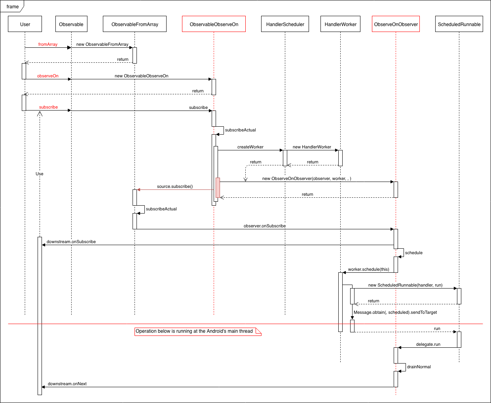

1. RxAndroid使用UI线程
在RxJava中，如果要在主线程中处理一个异步任务的结果，通常使用AndroidSchedulers.mainThread()来获取一个Scheduler。
1.1. mainThread()
通过AndroidSchedulers.mainThread()，可以获取到一个Scheduler，在该Scheduler上进行的任务，都是在UI线程。
public final class AndroidSchedulers {
private static final class MainHolder {
static final Scheduler DEFAULT
= new HandlerScheduler(new Handler(Looper.getMainLooper()), false);
}
private static final Scheduler MAIN_THREAD = RxAndroidPlugins.initMainThreadScheduler(
new Callable<Scheduler>() {
@Override public Scheduler call() throws Exception {
return MainHolder.DEFAULT;
}
});
/** A {@link Scheduler} which executes actions on the Android main thread. */
public static Scheduler mainThread() {
return RxAndroidPlugins.onMainThreadScheduler(MAIN_THREAD);
}
}
AndroidSchedulers.mainThread()方法，获取到的是一个单例的HandlerScheduler对象。
1.2. HandlerScheduler
HandlerScheduler持有一个Handler对象，线程切换就是基于这个Handler对象来实现，从上面一段代码中可以看到这个Handler对象传入的是new Handler(Looper.getMainLooper())，所以通过Handler来处理的任务，就是在Android的主线程当中执行。
final class HandlerScheduler extends Scheduler {
private final Handler handler;
private final boolean async;
HandlerScheduler(Handler handler, boolean async) {
this.handler = handler;
this.async = async;
}
@Override
@SuppressLint("NewApi") // Async will only be true when the API is available to call.
public Disposable scheduleDirect(Runnable run, long delay, TimeUnit unit) {
if (run == null) throw new NullPointerException("run == null");
if (unit == null) throw new NullPointerException("unit == null");
run = RxJavaPlugins.onSchedule(run);
ScheduledRunnable scheduled = new ScheduledRunnable(handler, run);
Message message = Message.obtain(handler, scheduled);
if (async) {
message.setAsynchronous(true);
}
handler.sendMessageDelayed(message, unit.toMillis(delay));
return scheduled;
}
@Override
public Worker createWorker() {
return new HandlerWorker(handler, async);
}
}
该类还有scheduleDirect方法和createWorker方法，前者创建一个Runnable并使用该handler来处理该Runnable。后者创建一个内部类HandlerWorker。
1.3. HandlerWorker
HandlerWorker继承自Worker，并覆写了schedule方法，该方法实现的功能和HandlerScheduler.scheuleDirect基本相同。
class HandlerWorker extends Worker {
private final Handler handler;
private final boolean async;
private volatile boolean disposed;
HandlerWorker(Handler handler, boolean async) {
this.handler = handler;
this.async = async;
}
@Override
@SuppressLint("NewApi") // Async will only be true when the API is available to call.
public Disposable schedule(Runnable run, long delay, TimeUnit unit) {
if (disposed) {
return Disposables.disposed();
}
ScheduledRunnable scheduled = new ScheduledRunnable(handler, run);
Message message = Message.obtain(handler, scheduled);
message.obj = this; // Used as token for batch disposal of this worker's runnables.
if (async) {
message.setAsynchronous(true);
}
handler.sendMessageDelayed(message, unit.toMillis(delay));
// Re-check disposed state for removing in case we were racing a call to dispose().
if (disposed) {
handler.removeCallbacks(scheduled);
return Disposables.disposed();
}
return scheduled;
}
}
1.4. ScheduledRunnable
ScheduledRunnable继承自Runnable，真正的任务是由外部传入进来的Runnable，这样封装一层用于对任务进行管理，dispose()方法表示移除任务，isDisposed()方法表示任务是否移除。
private static final class ScheduledRunnable implements Runnable, Disposable {
private final Handler handler;
private final Runnable delegate;
private volatile boolean disposed; // Tracked solely for isDisposed().
ScheduledRunnable(Handler handler, Runnable delegate) {
this.handler = handler;
this.delegate = delegate;
}
@Override
public void run() {
try {
delegate.run();
} catch (Throwable t) {
RxJavaPlugins.onError(t);
}
}
@Override
public void dispose() {
handler.removeCallbacks(this);
disposed = true;
}
@Override
public boolean isDisposed() {
return disposed;
}
}
1.5. Example
假设在一个线程中执行以下一段代码，通过跟踪分析它的流程来看HandlerScheduler是怎么切换到observeOn所指定的UI线程的。
Observable.fromArray("1", "2") // step1
.observeOn(AndroidSchedulers.mainThread()) // step2
.subscribe(new Observer<String>() { // step3
@Override
public void onSubscribe(Disposable d) {
Log.e(TAG, "onSubscribe");
}
@Override
public void onNext(String s) {
Log.e(TAG, "onNext: " + s);
}
@Override
public void onComplete() {
}
});
- 返回一个ObservableFromArray对象，该对象里面包含了数据源。
- 返回一个ObservableObserveOn对象，该对象指定了订阅者订阅事件所在的线程。
- subscribe开始订阅。

ObservableObserve.subscribeActual
该方法中使用scheduler.createWorker()创建一个Worker实例，然后将该Worker实例作为参数，又创建了一个ObserveOnObserver对象。
protected void subscribeActual(Observer<? super T> observer) {
if (scheduler instanceof TrampolineScheduler) {
source.subscribe(observer);
} else {
Scheduler.Worker w = scheduler.createWorker();
source.subscribe(new ObserveOnObserver<T>(observer, w, delayError, bufferSize));
}
}
ObserveOnObserver.schedule
订阅事件在事件下行过程中通过该ObserveOnObserver向下分发订阅事件，schedule方法中的worker，即上面创建的HandlerWorker。
// ObserveOnObserver.schedule执行订阅事件
void schedule() {
if (getAndIncrement() == 0) {
worker.schedule(this);
}
}
HandlerWorker.schedule
HandlerWorker.schedule方法通过Handler发消息的方式，将Runnable任务切换到UI线程中执行。
public Disposable schedule(Runnable run, long delay, TimeUnit unit) {
// ...
ScheduledRunnable scheduled = new ScheduledRunnable(handler, run);
Message message = Message.obtain(handler, scheduled);
message.obj = this; // Used as token for batch disposal of this worker's runnables.
handler.sendMessageDelayed(message, unit.toMillis(delay));
// Re-check disposed state for removing in case we were racing a call to dispose().
if (disposed) {
handler.removeCallbacks(scheduled);
return Disposables.disposed();
}
return scheduled;
}